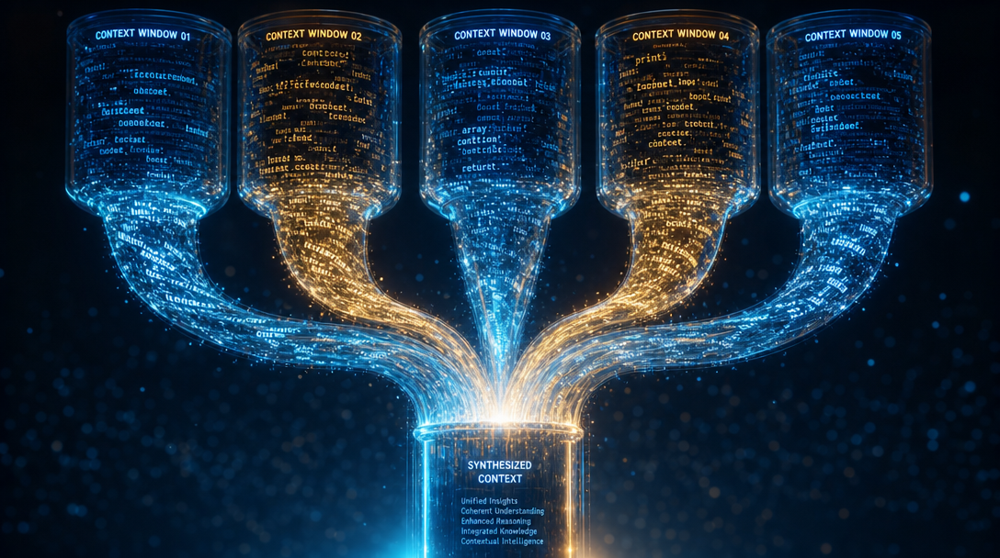
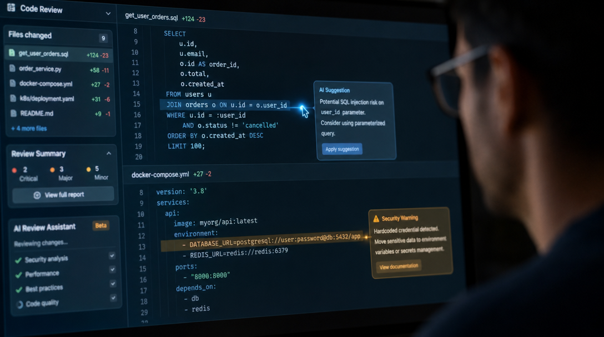

Subagents, orchestration, parallélisation : comment Claude Code transforme un assistant unique en équipe d'agents spécialisés — cours complet et TP d'audit de microservice pour architectes backend.
Un agent unique souffre d'une limite structurelle : sa fenêtre de contexte. Chaque recherche dans le code, chaque sortie de test, chaque diff consulté s'accumule dans la même conversation — et tout ce bruit dégrade la qualité des décisions suivantes tout en gonflant le coût de chaque tour. Pour un architecte backend, le parallèle est immédiat : c'est le monolithe qui traite tout dans un seul thread, avec une seule mémoire partagée qui finit par saturer. L'approche multi-agents applique au travail cognitif ce que nous appliquons depuis vingt ans aux systèmes distribués : décomposer, isoler, paralléliser, puis agréger.
Anthropic a chiffré le gain sur son propre produit Research : un orchestrateur Claude Opus 4 pilotant des subagents Claude Sonnet 4 a surpassé un agent Opus 4 seul de 90,2 % sur leur évaluation interne. Leur analyse révèle que 80 % de la variance de performance s'explique par la quantité de tokens dépensés sur le problème — autrement dit, le multi-agents gagne d'abord parce qu'il permet de dépenser plus de calcul en parallèle, chaque agent disposant de sa propre fenêtre de contexte vierge. Sur les requêtes complexes, la parallélisation réduit le temps de résolution jusqu'à 90 %.
La contrepartie est économique : 15 fois plus de tokens qu'un chat classique. Le multi-agents ne se justifie donc que pour des tâches parallélisables et à forte valeur — exactement le profil d'une revue d'architecture, d'un audit de sécurité ou d'une analyse de migration. Ce cours couvre les trois étages de la fusée Claude : les subagents déclaratifs de Claude Code, leur pendant programmatique dans l'Agent SDK, et les patterns d'orchestration qui les gouvernent. Il se termine par un TP complet : monter une équipe de quatre agents d'audit sur l'un de vos propres services.
Un subagent est une instance d'agent séparée que l'agent principal peut spawner pour une sous-tâche ciblée. Le modèle mental le plus juste pour un dev backend : un worker process avec son propre espace mémoire. Le seul canal d'entrée est le prompt de délégation — l'équivalent d'un message déposé sur une queue — et la seule sortie est son message final, qui remonte verbatim à l'orchestrateur. Tout le reste (appels d'outils intermédiaires, fichiers lus, logs) reste confiné dans le contexte du subagent et n'encombre jamais la conversation principale.
Le contrat d'interface est précis. Un subagent reçoit : son propre system prompt, le prompt de tâche rédigé par l'orchestrateur, le CLAUDE.md du projet et un snapshot du statut git. Il ne reçoit pas : l'historique de la conversation parente, ni le system prompt du parent. Chaque agent peut en outre être contraint — liste d'outils en allowlist (tools) ou denylist (disallowedTools), modèle dédié (Haiku pour explorer vite et pas cher, Opus pour une revue critique), mode de permissions, hooks de validation, et même une mémoire persistante inter-sessions.
"Les systèmes multi-agents fonctionnent principalement parce qu'ils permettent de dépenser suffisamment de tokens pour résoudre le problème."
— Anthropic Engineering, « How we built our multi-agent research system », juin 2025Une règle structurante découle de ce design : un subagent ne peut pas spawner d'autres subagents. La hiérarchie est plate, à un seul niveau — c'est le pattern superviseur dans sa forme la plus stricte, qui élimine par construction les explosions récursives et garde la topologie du système lisible. Si un workflow exige une délégation imbriquée, on chaîne les subagents depuis l'orchestrateur au lieu de les emboîter.

Le pattern fondateur est l'orchestrator-workers, formalisé par Anthropic dès décembre 2024 dans « Building Effective Agents » : un agent principal analyse la demande, la décompose en sous-tâches, délègue chacune à un spécialiste, puis synthétise les résultats. C'est l'architecture du système Research d'Anthropic — le lead planifie, sauvegarde son plan en mémoire, puis lance 3 à 5 subagents qui explorent des directions indépendantes, chacun avec ses propres outils.
Trois variantes complètent la panoplie. Le fan-out parallèle traite des sous-tâches indépendantes simultanément : le temps total devient celui de la tâche la plus lente, pas la somme. Le chaînage séquence des agents dont chacun consomme la synthèse du précédent — un reviewer détecte, un optimiseur corrige, un testeur valide. Le fork, enfin, clone la conversation entière : le subagent hérite de tout le contexte parent (et de son cache de prompt, ce qui le rend moins cher à démarrer), idéal pour une tâche annexe qui exigerait trop de ré-explication.
Un agent lead décompose le problème, délègue à des spécialistes et synthétise. Le pattern du système Research d'Anthropic, et le seul supervisor natif de Claude Code.
N agents indépendants en simultané : style, sécurité et couverture de tests analysés en même temps. Temps total = celui du plus lent.
Les agents se succèdent, chacun reçoit la synthèse du précédent. Reviewer → fixeur → testeur : un pipeline, pas une mêlée.
Clone la conversation entière pour une tâche annexe, sans réexpliquer le contexte. Cache de prompt partagé avec le parent : spawn quasi gratuit.
Le choix se fait sur la structure de dépendances : sous-tâches indépendantes → fan-out ; dépendances séquentielles → chaînage ; tâche annexe gourmande en contexte → fork. Et au-delà de quelques agents par tour — pour des runs qui en coordonnent des dizaines ou des centaines — Claude propose le Workflow tool : l'orchestration sort de la conversation pour vivre dans un script que le runtime exécute, l'agent ne voyant que le résultat final. Le déterminisme du code pour le contrôle, le modèle pour le raisonnement.
"Un système multi-agents avec Claude Opus 4 en agent principal et des subagents Claude Sonnet 4 a surpassé Claude Opus 4 en agent unique de 90,2 % sur notre évaluation interne de recherche."
— Anthropic Engineering, juin 2025
Dans Claude Code, un agent personnalisé tient dans un fichier Markdown : un frontmatter YAML pour la configuration, un corps de texte qui devient son system prompt. Déposé dans .claude/agents/, il est versionné avec le code et partagé avec l'équipe — la définition d'agent devient un artefact de la codebase, au même titre qu'un Dockerfile. Dans ~/.claude/agents/, il vous suit sur tous vos projets. Trois agents built-in complètent l'arsenal : Explore (Haiku, lecture seule, recherche rapide), Plan (recherche en mode planification) et general-purpose (tous outils).
Deux champs sont obligatoires : name et description. Le second est crucial — c'est lui que l'orchestrateur lit pour router automatiquement les tâches ; une description précise (« Use proactively after code changes ») vaut toutes les invocations manuelles. Le reste configure les capacités : tools, model, permissionMode, hooks de cycle de vie, memory persistante, et même des serveurs MCP scopés au seul agent — un moyen élégant de garder leurs définitions d'outils hors du contexte principal.
L'invocation suit trois niveaux d'escalade : la délégation automatique sur la base des descriptions, la @-mention qui garantit l'exécution d'un agent précis, et le flag --agent qui fait de toute la session une instance de cet agent. Chaque subagent peut tourner en foreground (bloquant, permissions interactives) ou en background (concurrent, permissions pré-accordées) — Ctrl+B bascule une tâche en arrière-plan. Côté SDK, la même définition se passe en paramètre agents d'un appel query() en Python ou TypeScript, ce qui ouvre la voie aux agents générés dynamiquement : un factory qui durcit le modèle et le prompt du security-reviewer quand la PR touche au paiement, par exemple.
Scénario fil rouge : un service de paiement reçoit une PR conséquente — deux migrations de schéma, trois nouveaux endpoints, une mise à jour de dépendances. Un agent unique qui enchaînerait contrat d'API, migrations, sécurité et performance saturerait son contexte avant la fin et noierait les findings critiques dans le bruit. La réponse multi-agents : un fan-out de quatre spécialistes, chacun confiné à son domaine et à ses outils, suivis d'une synthèse priorisée par l'orchestrateur.
Chaque agent est volontairement étroit : un domaine, une grille de lecture, des outils en lecture seule sauf nécessité absolue. C'est la transposition directe du principe de responsabilité unique — et c'est aussi ce qui rend leurs descriptions discriminantes pour le routage automatique. L'orchestration tient en un prompt : « Audite la branche courante en parallèle avec les agents api-contract-reviewer, db-migration-auditor, security-scanner et perf-analyzer, puis synthétise les findings par priorité. »
Cohérence spec OpenAPI / handlers, breaking changes, versioning, codes d'erreur et idempotence. Tools : Read, Grep, Glob. Model : sonnet.
Index manquants, locks longs, stratégie de rollback, intégrité référentielle. Hook PreToolUse qui bloque tout SQL d'écriture : audit strictement read-only.
Injections, secrets exposés, authz manquante, dépendances vulnérables. Model : opus — on ne lésine pas sur le modèle quand l'enjeu est critique.
Requêtes N+1, pagination absente, payloads non bornés, pools de connexions. Read, Grep + Bash pour lancer les EXPLAIN ANALYZE.
Le gain est triple. Temps : les quatre audits tournent simultanément, l'attente totale est celle du plus lent. Qualité : chaque agent dispose d'un contexte entier pour son seul domaine, là où un généraliste arbitrerait entre profondeur et couverture. Gouvernance : les contraintes sont structurelles, pas déclaratives — le db-migration-auditor ne peut pas écrire en base, son hook le lui interdit au niveau de l'outil, pas du prompt. Le TP qui suit vous fait monter cette équipe exacte sur l'un de vos services.
Le multi-agents n'est pas né d'un coup : chaque étage s'est empilé sur le précédent en trois ans, du simple appel de fonction aux équipes d'agents communicants.
L'API Claude apprend à appeler des fonctions externes. Sans appel d'outil fiable, pas d'agent : c'est le syscall du monde agentique.
Anthropic formalise la distinction workflows / agents et le pattern orchestrator-workers (décembre 2024). Le manifeste : des patterns simples et composables plutôt que des frameworks complexes.
Le système multi-agents de recherche d'Anthropic surpasse l'agent unique de 90,2 % (juin). Claude Code généralise les subagents déclaratifs en Markdown ; le Claude Agent SDK (septembre) expose la même mécanique en Python et TypeScript.
Les subagents tournent en arrière-plan, les forks héritent du contexte parent à coût marginal, et le Workflow tool scripte l'orchestration de dizaines d'agents hors de la conversation.
Des sessions indépendantes qui communiquent entre elles (jusqu'à 25 threads concurrents), et des agents qui capitalisent leurs apprentissages dans une mémoire versionnable par projet.
Deux tendances se dessinent. D'abord la mémoire persistante par agent : un security-scanner qui note les patterns de vulnérabilités récurrents de votre codebase dans .claude/agent-memory/ devient plus pertinent à chaque sprint — l'institutionnalisation du savoir, versionnée dans git. Ensuite les agent teams, encore expérimentales : là où les subagents restent confinés à une session avec un superviseur unique, les teams font dialoguer des sessions autonomes — une topologie de microservices cognitive, avec les mêmes questions d'observabilité et de gouvernance que nos architectures distribuées.
Objectif : constituer l'équipe d'audit de la section précédente sur l'un de vos propres services backend, sans une ligne de SDK — uniquement des fichiers Markdown. Prérequis : Claude Code installé, un repo backend réel (idéalement avec des migrations et une spec d'API). Livrable : quatre définitions d'agents versionnées dans le repo et un rapport d'audit priorisé.
Créez .claude/agents/ à la racine du repo et écrivez les quatre fichiers : api-contract-reviewer.md, db-migration-auditor.md, security-scanner.md, perf-analyzer.md. Voici le plus complet — l'auditeur de migrations avec son hook de validation read-only ; calquez les trois autres sur le modèle de la section 4, en soignant chaque description (c'est elle qui pilote le routage). Redémarrez la session puis vérifiez avec /agents que les quatre apparaissent.
Placez-vous sur une branche qui contient de vrais changements, puis collez le prompt d'orchestration ci-dessous. Observez la délégation dans l'interface : les quatre agents doivent partir en parallèle (basculez-les en background avec Ctrl+B si besoin), et seules leurs synthèses doivent remonter dans votre conversation principale — vos tokens de contexte vous diront merci.
Trois durcissements pour transformer la maquette en outil d'équipe. Un : ajoutez memory: project au security-scanner et demandez-lui de consigner les patterns récurrents — relancez-le sur une autre PR et constatez qu'il s'appuie sur ses notes. Deux : écrivez le script validate-readonly-query.sh (bloquer INSERT/UPDATE/DELETE/DROP via exit code 2) et vérifiez qu'une tentative d'écriture SQL est bien refusée. Trois : testez le chaînage — « utilise le security-scanner pour trouver les vulnérabilités, puis un agent debugger pour proposer les correctifs ». Validation : les 4 agents listés dans /agents, délégation automatique constatée sur une simple demande d'audit, hook qui bloque une écriture, et un rapport final qui tient en un écran.
"Invariablement, les implémentations les plus réussies utilisent des patterns simples et composables plutôt que des frameworks complexes."
— Anthropic, « Building Effective Agents », décembre 2024Pour aller plus loin : portez ces quatre définitions dans le paramètre agents d'un query() de l'Agent SDK et branchez l'audit en CI sur chaque PR ; packagez l'équipe en plugin pour la distribuer à toute l'organisation ; ou explorez les agent teams pour faire dialoguer l'auditeur avec un agent de remédiation autonome. La mécanique reste la même — seul le niveau d'automatisation change.